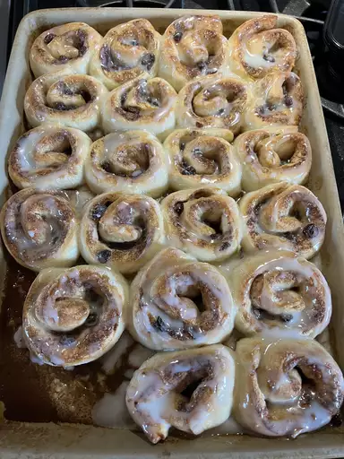

Cinnamon Rolls

Description
Cinnamon rolls that take about 2 hours to make altogether including proofing time for the dough.
Ingredients
- 1 (1 pound) loaf frozen bread dough, thawed
- 3 tablespoons butter, melted
- ⅔ cup brown sugar
- ½ cup chopped walnuts
- 1 teaspoon ground cinnamon
- 1 teaspoon water, or as needed
- ⅓ cup heavy whipping cream
- ⅔ cup sifted confectioners' sugar
- 2 tablespoons milk
- 1 dash vanilla extract